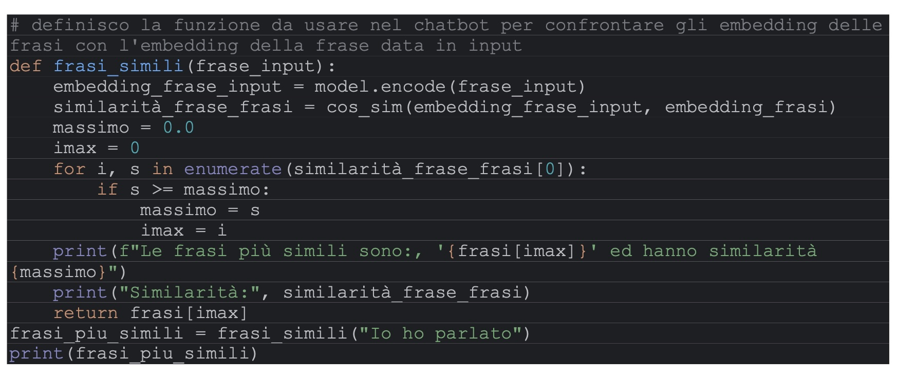

In questa fase, ho definito una funzione che permette di confrontare una frase inserita manualmente con tutte le frasi del testo. Per farlo, utilizzo gli embedding delle frasi (calcolati in precedenza) e l'embedding della frase data in input (che calcolerò al momento).
Il confronto avviene calcolando la similarità tra i vettori ottenuti. In questo modo, posso individuare la frase (o le frasi) che hanno un significato più vicino a quello espresso dalla frase fornita.